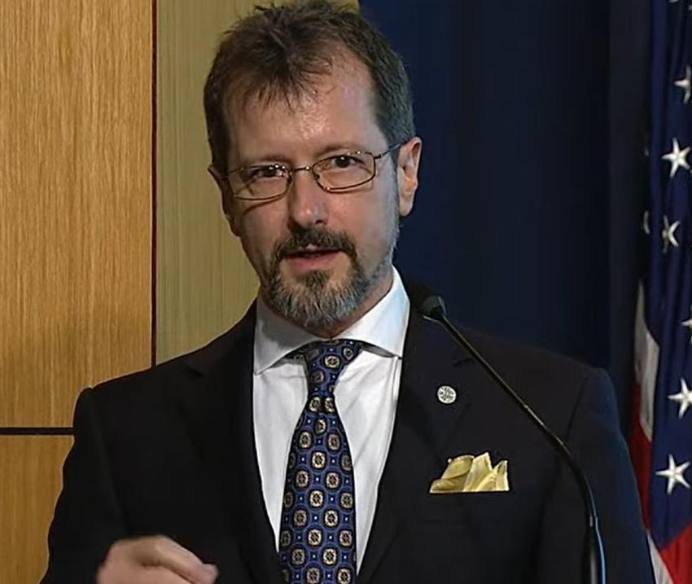

Il étudie la physique à l'Université de Géorgie, où il obtient une license en puis un doctorat sous la supervision de William Dennis.
Par la suite, il mène des recherches à l'Université de l'Illinois Urbana-Champaign ainsi qu'au NRL. Il rejoint ensuite l'Air Force Research Laboratory en puis la CIA en .
Le , il prend la tête de l'AARO, travaillant notamment avec David Grusch. Il quitte l'AARO .
En , il rejoint l'Oak Ridge National Laboratory (DoE), dont il devient directeur technique (chief technology officer) pour les programmes de défense et de renseignement . Il enseigne aussi la physique comme professeur adjoint à l'Université de Géorgie .
Le , il publie dans Scientific American une tribune où il écrit n'avoir trouvé aucune preuve d'origine extraterrestre durant son mandat : selon lui, les accusations de dissimulation viennent surtout de divulgations non autorisées de programmes légitimes, et d'un petit groupe de promoteurs .
Début , il déclare être harcelé par un groupe de militants partisans de l'HET l'attaquant dès qu'il déclare n'avoir trouvé aucune preuve d'origine ET malgré un accès à toutes les données qu'il a demandé (Title 10, Title 50). Il ajoute avoir reçu des menaces contre lui, mais aussi sa famille .
Le , il conteste le récit du triangle noir
silencieux rapporté par des agents du FBI dans la septième tranche des fichiers PURSUE : sans photographie ni autre élément matériel, le rapport ne permet pas
selon lui de savoir ce que les témoins ont vu, et leur profession ne valide pas leur récit — cas classique de biais d'autorité
. Il rappelle que les données examinées par l'AARO ne correspondaient à aucune hypothèse
extraterrestre, distingue les cas non résolus
(données insuffisantes) des cas non identifiés
(données exploitables mais objet inconnu), et affirme que la direction du Pentagone a
demandé à l'AARO de retirer des formulations de résolution de certains dossiers avant publication, sans dire quand ni
par qui .